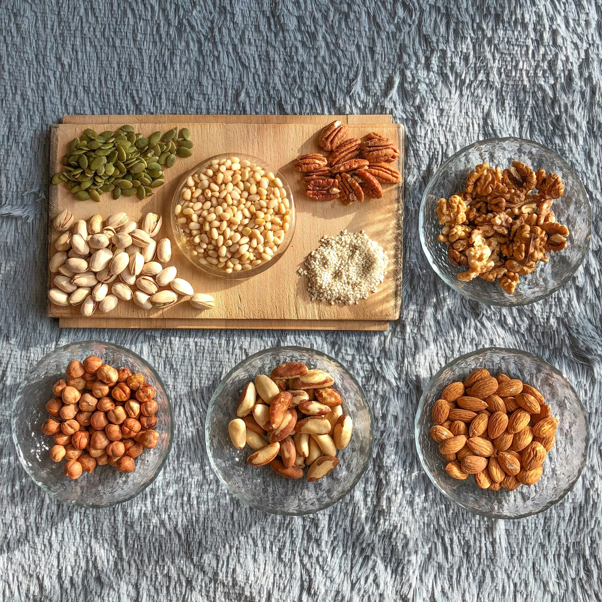
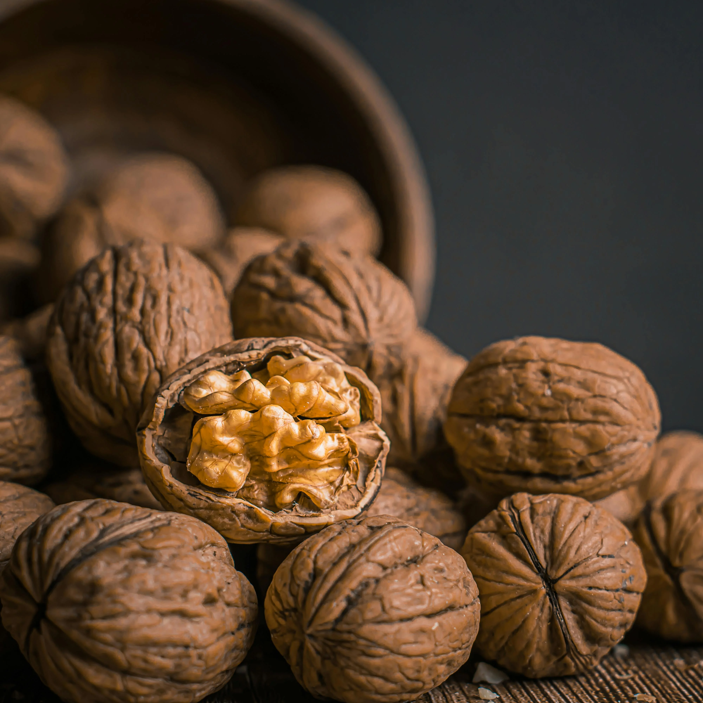
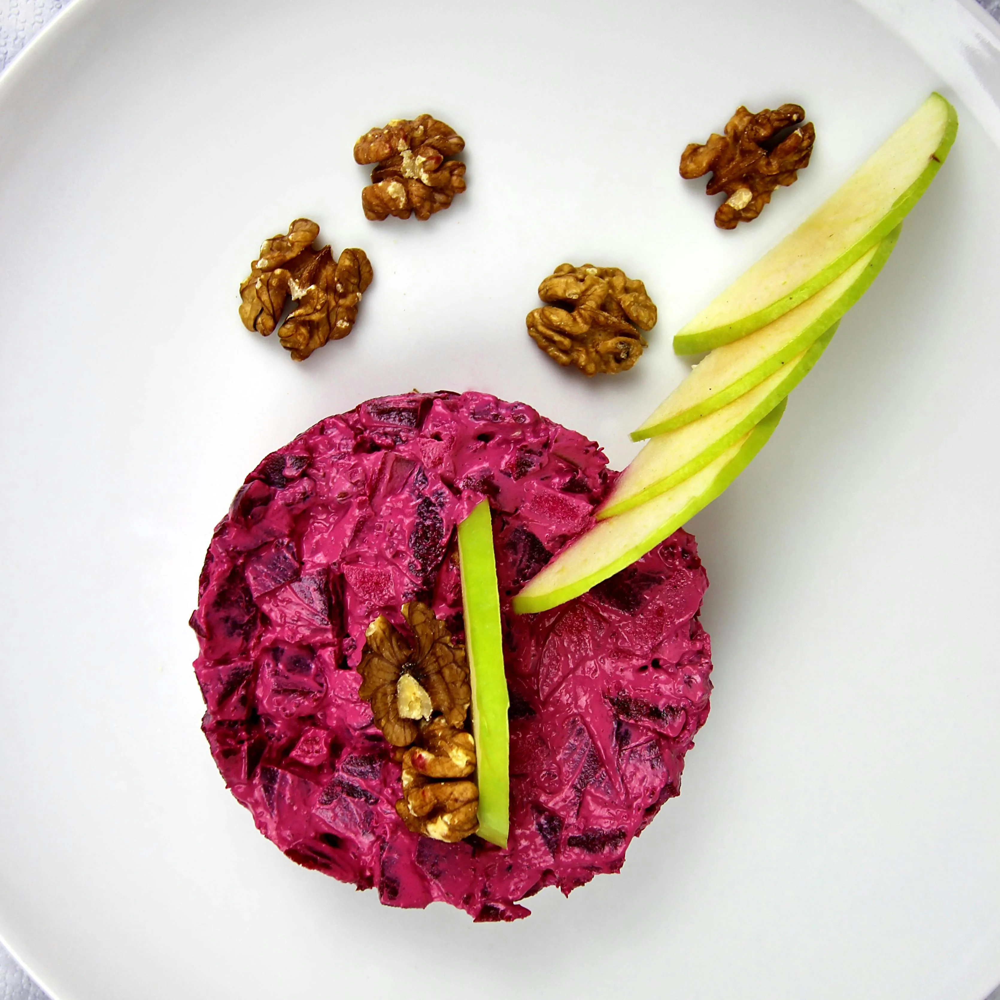
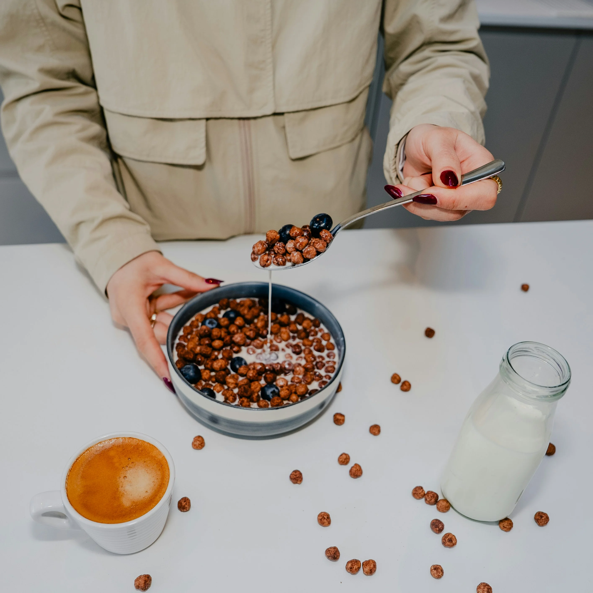

Discover, savor, and share the finest walnut creations — your ultimate destination for recipes, tips, and inspiration

Healthy Walnut Recipes for Every Season
The Walnut Recipe Vault is your go‑to destination for discovering healthy walnut recipes that fit every time of year. From fresh summer salads with toasted walnuts to hearty winter stews enriched with walnut oil, each dish is designed to nourish and delight. Packed with omega‑3s, antioxidants, and plant‑based protein, walnuts bring both flavor and health benefits to your table. Our seasonal approach ensures you’re using the freshest produce alongside the rich, earthy taste of walnuts. Whether you’re a seasoned cook or just starting out, the Walnut Recipe Vault makes healthy eating both simple and satisfying.

Why Walnuts Deserve a Place in Your Diet: Insights from the Walnut Recipe Vault
Here, it isn’t just about flavor — it’s also a gateway to understanding the powerful health benefits of this superfood. Walnuts are rich in omega‑3 fatty acids, antioxidants, and essential minerals, making them a cornerstone of healthy walnut recipes. Studies show they can support heart health, improve brain function, and reduce inflammation, all while adding depth to your favorite dishes from the Walnut Flavor Hub. Their nutrient profile also promotes better digestion and can aid in weight management when enjoyed in moderation. Whether eaten raw, roasted, or blended into smoothies, walnuts bring both taste and wellness to the table. For anyone seeking a delicious path to better health, the Walnut Recipe Vault is the perfect place to start.

Decadent Walnut Dessert Ideas You’ll Love
Step into the Walnut Flavor Vault and unlock a world of indulgent walnut dessert ideas. Imagine rich chocolate brownies studded with crunchy walnuts, buttery tarts with a caramel‑walnut filling, and creamy cheesecakes topped with candied walnut crumbles. These recipes celebrate the natural sweetness and depth of walnut flavor, making them perfect for special occasions or everyday treats. Each dessert is crafted to balance texture and taste, ensuring every bite is memorable. This is where your sweetest walnut dreams come to life. With every creation, you’ll discover how walnuts can turn simple desserts into unforgettable moments. One bite is all it takes to fall in love — a taste that lingers, warms, and leaves you wanting more.

Famous Faces Who Can’t Get Enough of Walnuts and Their Favorite Walnut Recipes
From Hollywood kitchens to professional sports arenas, walnuts have earned a place in the diets of some of the world’s most recognizable names. Celebrity chef Jamie Oliver often incorporates walnuts into his rustic salads and baked goods, praising their earthy crunch and nutritional value. Actress Gwyneth Paltrow has featured walnut‑based dishes in her wellness brand’s recipe collections, highlighting their role in balanced, plant‑forward eating and overall walnut health and nutrition. Even elite athletes like Novak Djokovic have been known to snack on walnuts for sustained energy and recovery. It’s no surprise that a collection like the walnut flavor vault would be a dream resource for these walnut enthusiasts.
Beyond the culinary world, TV personalities such as Nigella Lawson and Paul Hollywood have showcased walnut dessert ideas on popular cooking shows, inspiring home bakers to experiment with the nut’s rich flavor. Their public appreciation has encouraged fans to explore creative dishes in the walnut recipe vault, from decadent tarts to savory grain salads. Whether it’s a gourmet kitchen or a home pantry, the appeal of walnuts lies in their perfect blend of taste, texture, and health benefits. For these famous figures, this humble nut is more than an ingredient — it’s a star in its own right.